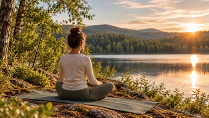
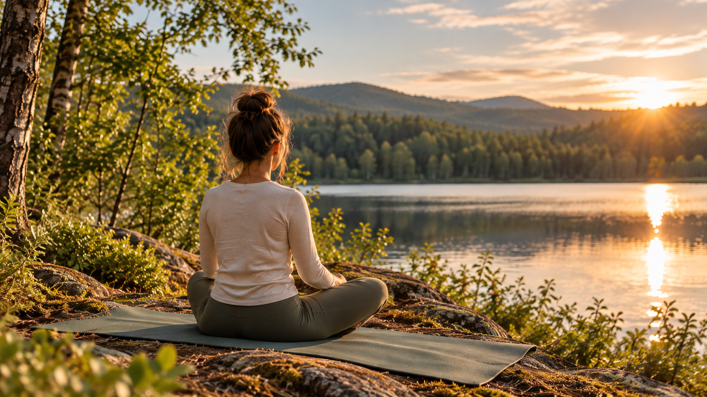
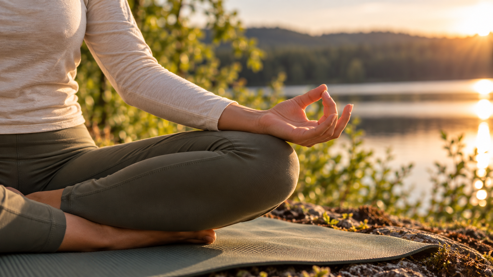
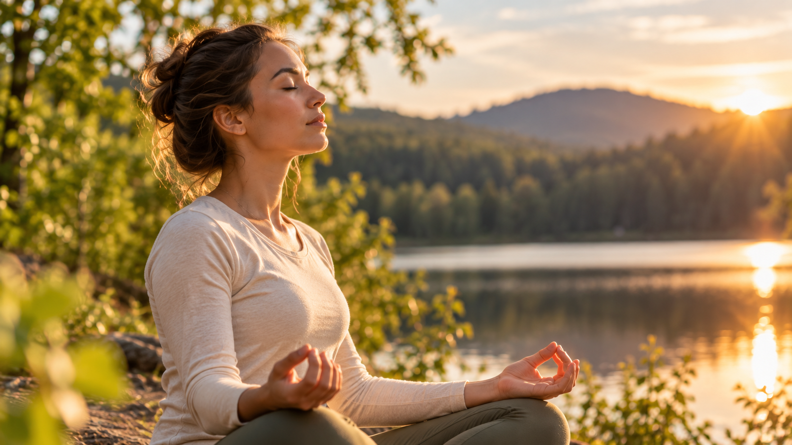
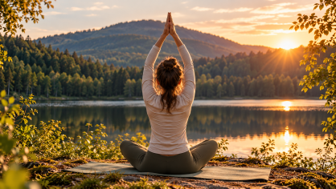

Find en rolig plads
Sæt dig et behageligt sted i naturen. Brug en yogamåtte eller sæt dig direkte på jorden.
Første øvelse
Start med en enkel øvelse, der hjælper dig med at finde ro og komme godt i gang med yoga i naturen.
5 minutter · Passer til begyndere


Sæt dig et behageligt sted i naturen. Brug en yogamåtte eller sæt dig direkte på jorden.

Sid med krydsede ben eller på en måde, der føles behagelig. Lad hænderne hvile på knæene.

Træk vejret langsomt ind gennem næsen, hold kort, og pust roligt ud gennem munden.

Fortsæt i 1–2 minutter og mærk, hvordan kroppen føles. Du kan gentage øvelsen, når du har brug for en pause.
Tag dig tid
Der er ingen grund til at skynde sig. Det vigtigste er, at du finder et tempo, der føles behageligt for dig.